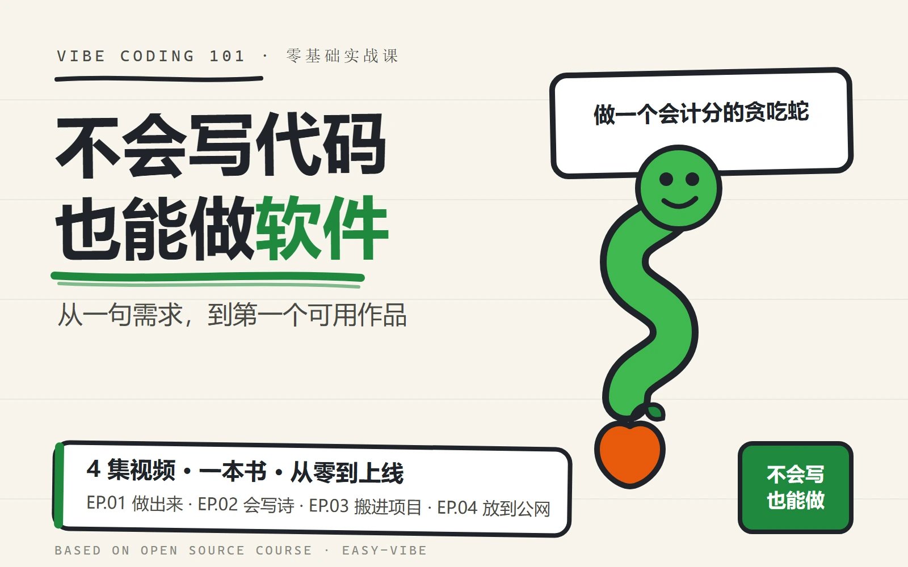

Vibe Coding 101：从一句需求到第一个可用作品
零基础实战教程：先做出能运行的作品，再逐步学会设计、调试、部署与 Agent。 本书整理自开源项目 datawhalechina/easy-vibe，按官网课程顺序收录中文内容。
30 秒看懂这本书
把 AI 想成一位速度很快、但需要你说清目标的搭档。你负责提出问题、判断结果；AI 负责生成、修改和解释。
一句需求 → AI 做原型 → 你看结果 → 继续修改 → 交付作品
| 阶段 | 这一站做什么 | 学完的结果 |
|---|---|---|
| Stage 1 入门 | 从真实问题出发，完成八步实践 | 交付第一个可用作品 |
| Stage 2 初中级 | 补齐设计、数据库、部署和支付 | 独立完成真实项目 |
| Stage 3 进阶 | 使用 Claude Code、MCP 与 Agent | 构建多平台 AI 应用 |
怎么读最省力
从 Stage 1 的学习方法开始，用同一个小项目贯穿三阶段，例如待办清单：先能添加和完成任务，再接数据库并部署，最后让 Agent 通过受限工具操作它。已有项目的读者可以带着自己的代码进入对应章节。
- 先跑通最小流程：照着示例做出可操作的结果，再解释每一步。
- 一次只改一件事：先写预期，再改代码，用同一组步骤检查变化。
- 卡住时带证据提问：提供复现步骤、完整报错和已尝试的办法；让 AI 提一个可验证的原因。
- 做完后换一个条件：试空输入、刷新、断网或重复操作。能解释失败原因并恢复，才算掌握这一段。
| 读到哪里 | 留下什么 | 怎样检查 |
|---|---|---|
| Stage 1：打磨并交付 | 可运行的最小作品、需求说明、一次排错记录 | 按说明重新启动；正常输入和空输入都有明确结果；说明哪次修改解决了什么问题 |
| Stage 2：数据库、部署 | 持久化数据、线上链接、部署与恢复记录 | 刷新后数据还在；未授权操作被拒绝；另一台设备能走通主流程；分清应用回滚与数据恢复 |
| Stage 3：Claude Code 入门及 MCP、Agent 相关章 | 有工具边界、日志和失败处理的应用 | 用一条成功任务和一条失败任务复做；核对真实工具回执，写清哪些动作仍需人确认 |
附录按需回查，不必全部读完才动手。大模型机制有配套的手绘实验，可在读到原书的原理章节时使用。
本书收录了原课程的文字与截图。文中提到的网页模拟器并非都能在书内操作；需要交互时，请打开章节附带的原课程链接。书内的代码示例、观察步骤与自测可单独完成。
新手术语翻译器
遇到术语时，不必先背定义。先知道它像什么，以及你下一步要做什么。
| 术语 | 人话解释 | 你实际要做什么 |
|---|---|---|
| Prompt（提示词） | 交给 AI 的任务说明书 | 说清背景、目标和验收标准 |
| AI IDE | 带 AI 助手的代码工作台 | 打开项目、提需求、运行并看结果 |
| Prototype（原型） | 能点、能演示的作品草稿 | 先验证流程，不急着打磨细节 |
| Database（数据库） | 应用长期保存信息的仓库 | 定义要保存什么，以及谁能读写 |
| Deploy（部署） | 把本地作品放到网上 | 获得一个别人可以打开的链接 |
| Agent | 会自己拆步骤、调用工具的 AI 助手 | 给目标、边界和检查标准 |
| JTBD | 用户真正想完成的任务 | 追问“他为什么需要这个功能” |
卡住时，直接复制这段给 AI
我正在做：___
我希望看到：___
现在实际出现：___
报错或截图信息：___
我已经尝试：___
请先解释原因，再一次只给我一个操作步骤。
5 分钟闯关：读完马上动手
每完成一关记一颗星。不要追求完美，只验证自己能不能推动作品前进一步。
| 关卡 | 5 分钟任务 | 通关标志 |
|---|---|---|
| ⭐ 第 1 关：开口 | 请 AI 做一个最小作品，例如倒计时器 | 画面能打开或代码能运行 |
| ⭐ 第 2 关：修改 | 只提一个改动，例如把按钮变绿 | 结果按要求发生变化 |
| ⭐ 第 3 关：排错 | 把报错和目标一起发给 AI | 你能用一句话说出原因 |
| ⭐ 第 4 关：交付 | 截图、录屏或生成公开链接 | 另一个人能看见你的作品 |
星级结算：1 星代表已经开始；2 星代表会迭代；3 星代表能排错；4 星代表完成了一次真正交付。
第一个作品：会写诗的贪吃蛇
把下面这段直接发给 AI。第一轮只求能玩，第二轮再增加创意。
请帮我做一个可以直接运行的贪吃蛇小游戏。
第一版要求：方向键控制、吃到食物会变长、撞墙后可以重新开始。
界面要简单清楚，先不要加入复杂特效。
完成后告诉我如何运行，并列出我可以继续修改的 3 个地方。
进阶改动：把普通食物换成“春、风、来”等文字。蛇每吃一个字，就把它加入下方句子；集齐后显示“春风来”。
验收清单：
- 游戏能启动，方向键有效。
- 吃到食物后长度或分数发生变化。
- 失败后可以重新开始。
- 文字版能按吃到的顺序组成一句话。
截图复刻：看图四步法
不要只对 AI 说“照着做”。按下面顺序观察，需求会清楚很多。
| 步骤 | 观察什么 | 可以这样说 |
|---|---|---|
| 1. 分区 | 页面分成哪几个大区域 | 顶部是导航，中间是主视觉，底部是功能卡片 |
| 2. 层级 | 哪个内容最先被看到 | 标题最大，按钮第二突出，说明文字更弱 |
| 3. 样式 | 颜色、圆角、阴影和留白 | 主色用绿色，卡片圆角 12px，阴影要轻 |
| 4. 验收 | 怎样才算复刻成功 | 手机宽度不挤压，按钮可点，整体间距接近截图 |
复刻提示词模板：
请根据这张截图复刻一个网页。
先分析页面的分区、视觉层级、颜色和间距，再开始实现。
不要臆造截图中没有的功能。完成后请列出与原图仍有差异的地方。
目录
- 指南
- Stage 1
- Stage 2
- NanoBanana 素材生产
- AI 设计入门
- Figma 与 MasterGo 入门
- UI 设计规范与多产品界面
- 结合 Agent Skills 美化界面
- 设计原型到项目代码
- 现代组件库与界面升级
- 数据库与 Supabase 入门
- 大模型辅助接口开发
- Git 与 GitHub 入门指南
- 把网站发到网上（简单方式）：Vercel/Cloudflare/CloudBase 一键发布
- 把网站发到网上（进阶方式）：自己买台 VPS 服务器搭建发布
- CLI Coding Agent 编程助手
- Stripe 支付集成
- Dify 入门与知识库集成
- 一起做霍格沃茨画像
- AI 营销文案 SaaS
- 在线考试与管理系统
- 现代 AI 生图 SaaS
- 类 Dify 智能体平台
- 智能旅游规划 Agent 平台
- Spring Boot 电影推荐系统
- 生鲜电商微服务系统
- Go 交通数据分析平台
- Stage 3
- Claude Code 快速上手核心指南
- Claude Code MCP 完全指南
- Claude Code Skills 完全指南
- 如何让 Coding Tools 长时间工作
- Claude Agent Teams 完全指南
- Claude Code 工作流最佳实践
- Claude Code 手机远程开发
- Claude Agent SDK 完全指南
- Claude Code Superpowers 工程级开发
- 从 Vibe Coding 到 Spec Coding
- GitHub Issues 驱动开发实战
- 从开发一个网页，到真正的程序，再到 AI 原生创作者
- 如何选择你的应用该开发的平台
- 如何构建微信小程序
- 如何构建微信小程序（包含后端）
- 如何用 Jetpack Compose 开发 Android 原生应用
- 如何用 SwiftUI 开发 iOS 原生应用
- 从零开始用 React Native + Expo 做一个门店巡检应用
- 如何开发 Flutter 跨平台应用
- 如何开发 PWA 本地应用
- 如何开发浏览器 AI 助手插件
- 如何开发跨平台 Electron 桌面程序
- 如何用 Godot 开发横版、像素与 3D 游戏
- 如何在本地模拟链铸造 NFT
- 如何开发 VS Code 插件
- 如何开发企业 Qt 设备客户端
- 如何构建属于自己的个人网页与学术博客
- 如何把开发好的程序发布上架
- 什么是 RAG 以及它如何工作
- 中高级 RAG 与工作流编排 - 以 LangGraph 为例
- Vibe 故事
- 附录
- 全栈开发导论：Vibe Coding 时代的计算机知识地图
- 计算机系统全景：从开机到访问网站
- 数字电路基础：从晶体管到 CPU
- 计算机组成原理
- 操作系统原理：进程、内存与文件系统
- 数据表示原理：编码、存储与传输
- 计算机网络：从输入网址到渲染页面
- 数据结构导论
- 算法导论
- 编程语言概念：范式、演化与选型
- 编译原理
- 类型系统导论
- 集成开发环境 (IDE) 基础
- 命令行与 Shell 脚本
- Git：代码的时光机
- 环境变量与 PATH
- 端口与 localhost
- SSH 与密钥认证
- 包管理器（npm / pip / cargo）
- 调试的艺术
- 正则表达式
- JavaScript 语言深入
- TypeScript：给 JS 加上类型系统
- 前端框架对比（React / Vue / Svelte / Angular）
- 浏览器渲染管道
- HTML / CSS 布局体系
- JavaScript 运行时
- 前端框架的本质
- 状态管理哲学
- 路由与导航
- 图形与动画（Canvas / SVG / WebGL）
- 实时通信（WebSocket / SSE）
- 网页性能的度量与优化
- 前端工程化全貌
- 前端项目文件目录设计
- 无障碍与国际化
- 后端语言对比（Node.js / Go / Java / Rust）
- 客户端语言对比（Swift / Kotlin / Dart）
- 跨平台方案对比（React Native / Flutter / Electron / Tauri）
- HTTP 协议
- 一个请求的完整旅程
- Web 框架的本质
- API 入门
- API 设计哲学（REST / GraphQL / gRPC）
- 序列化与数据格式
- 认证与授权体系
- 并发、异步与多线程
- 缓存的层次与策略
- 消息队列与事件驱动
- 异步任务队列与生产消费模型
- 限流与背压控制
- 搜索引擎原理
- 文件存储与对象存储
- 后端分层架构
- 后端项目文件目录设计
- 领域特定语言（DSL）
- 数据库原理（索引 / 事务 / 查询优化）
- 数据模型全景（文档 / 图 / 时序 / 向量）
- 数据埋点与用户行为采集
- 数据分析基础（统计 / 指标 / 漏斗）
- A/B 测试与实验驱动
- 数据可视化与仪表盘
- 数据治理与数据质量
- 从单体到微服务的演进
- 分布式系统的挑战
- 高可用与容灾
- 系统设计方法论
- Linux 基础
- Docker 容器化
- Kubernetes 编排
- CI / CD 自动化
- 域名、DNS 与 HTTPS
- 负载均衡与网关
- 网关与反向代理
- 云平台实战
- IAM 权限管理
- 对象存储与 CDN
- 基础设施即代码
- 监控、日志与告警
- 故障排查与应急响应
- AI 简史与核心概念
- 神经网络与深度学习
- Transformer 与注意力机制
- 大语言模型的工作原理
- 提示词工程
- 上下文工程
- 多模态模型（视觉 / 音频 / 视频）
- 图像生成原理
- 语音合成与识别
- Embedding 与向量检索
- RAG 架构
- AI Agent 与工具调用
- AI 协议（MCP & A2A）
- 模型微调与部署
- AI 原生应用设计
- AI 能力词典
- 代码质量与重构
- 测试策略
- 设计模式
- 安全思维与攻防基础
- 技术文档写作
- 开源协作
- 技术选型方法论
- 补充内容（官网目录未收录）
📖 阅读说明：点击目录条目可跳转到对应章节。正文插图已随书镜像到本仓库
book/assets/images/，可离线阅读；指向其他章节文档的链接会打开 easy-vibe 上游仓库对应页面；上游源码中已注释掉的截图（如组件库一章）在书中保持注释状态。